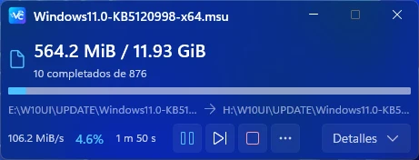

VelocityCopy
Copia y mueve archivos con control de la cola, progreso detallado y recuperación del trabajo pendiente.
Pausa, reanudación y gestión de conflictos en una interfaz integrada con Windows.
C++20 · WinUI 3
Explorar VelocityCopy
Desarrollo herramientas para Windows y Android TV, y comparto documentación para entender, configurar y aprovechar mejor cada equipo.
Explorar proyectos01 / PROYECTOS SELECCIONADOS
Qué hace cada herramienta, para qué sistema está pensada y dónde seguir su desarrollo.
Copia y mueve archivos con control de la cola, progreso detallado y recuperación del trabajo pendiente.
Pausa, reanudación y gestión de conflictos en una interfaz integrada con Windows.
C++20 · WinUI 3
Explorar VelocityCopy
Un origen, varios destinos. Copia archivos y carpetas simultáneamente con recuperación y verificación opcional.
El producto actual de disk-duplicator se centra en copia de archivos mediante FAN-OUT.
C# · .NET 10 · WinUI 3
Explorar RepartoCopierFiltrado de anuncios y rastreadores mediante una VPN local, con DNS cifrado y controles por aplicación.
En desarrollo. La medición de rendimiento en TV sigue pendiente según el README.
Rust · Kotlin
Explorar NF DNS VPNNavegador para usar con el mando: pestañas, marcadores, búsqueda por voz y gestor de descargas.
Adaptación de TV Bro centrada en WebView y dispositivos con memoria limitada.
Kotlin · WebView
Explorar VireoLumaTVMotor de descargas con segmentación por rangos, reanudación y comprobación SHA-256.
Herramienta en desarrollo. Consulta el repositorio para conocer su estado y uso.
Rust · HTTP / HTTPS
Explorar W11DownloaderProExploración de compatibilidad del modo oscuro en aplicaciones clásicas de Windows.
Prototipo experimental centrado en colores del sistema y GDI clásico.
C++ · Win32 · Windhawk
Explorar ColorFixLas funciones y la disponibilidad dependen de cada proyecto. Consulta su README y sus publicaciones antes de instalar.
Ver todos los repositorios02 / BIBLIOTECA TÉCNICA
Las guías y configuraciones de macOS siguen aquí: OpenCore, conectividad y compatibilidad de hardware.
Cada configuración tiene requisitos propios. Los forks se identifican y conservan su proyecto de origen.
03 / ENFOQUE
Herramientas que resuelven tareas concretas, con su funcionamiento y sus límites documentados.
Copiar archivos, gestionar descargas o navegar desde el televisor. Cada proyecto parte de una tarea reconocible.
Interfaces nativas, WebView y motores de sistema elegidos según el dispositivo y el trabajo que deben realizar.
Repositorios públicos para consultar el código, los cambios, las instrucciones y las limitaciones conocidas.
04 / COMUNIDAD
Consulta el código, sigue los tutoriales o participa en la conversación.